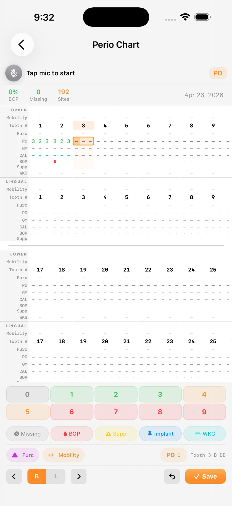
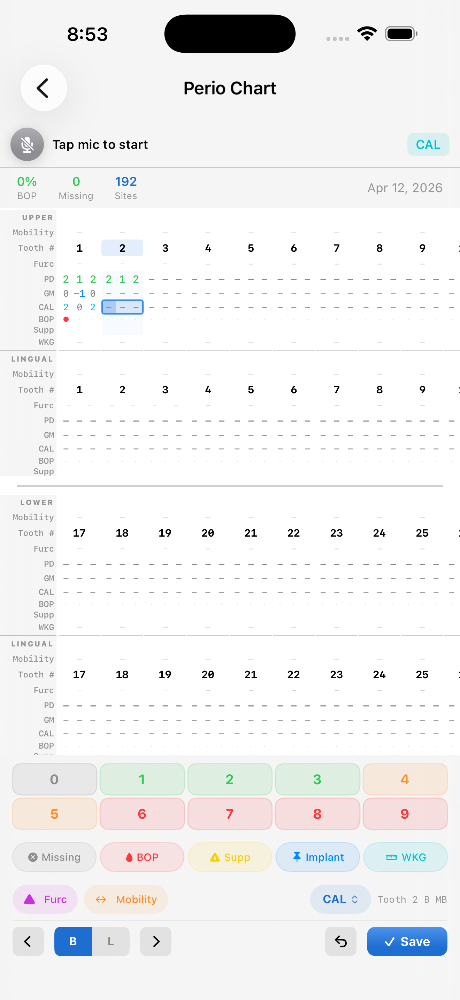

Voice charting
Call out probing depths, gingival margins, bleeding on probing, furcation, and mobility. PerioMaxer writes it down while you work.
PerioMaxer is a voice-powered periodontal charting app built for dentists, hygienists, and periodontists. Records stay encrypted on your device. Dictate probing depths, bleeding, mobility, and more — your hands stay on the instruments, not the keyboard.
Designed from the chair — not a spreadsheet.
Call out probing depths, gingival margins, bleeding on probing, furcation, and mobility. PerioMaxer writes it down while you work.
Records are encrypted and stored locally on your device. No cloud sync, no third-party servers, no surprises.
The recognizer ignores side conversations and only commits dental commands — so "did you see the game?" doesn't end up in the chart.
Generate clean, printable periodontal reports for patient records and referrals in a single tap.
Built-in drug and ICD-10 indexes let you attach medications and conditions to each patient quickly and accurately.
Six sites per tooth, upper and lower arches, missing-tooth handling, plus bleeding, suppuration, and mobility indicators.
Built in SwiftUI with a glass interface that reads clearly in any operatory light.


Every plan starts with a free 1-week trial. Cancel anytime, no questions.
No ads. No data sold. No cloud accounts. Just the app.
Clinical use PerioMaxer is a documentation aid built for licensed dental professionals. It is not a medical device, is not FDA-cleared, and is not intended for diagnosis or treatment. Voice recognition and data entry can produce errors; the licensed clinician is responsible for verifying every recorded value and remains the responsible party for the official chart of record.
Quick answers about how PerioMaxer fits into your operatory.
No. PerioMaxer is a documentation aid for licensed dental professionals. It is not FDA-cleared and is not intended for diagnosis, treatment, or any decision-support role. Voice recognition can produce errors, so the clinician must verify every recorded value before relying on it as the chart of record.
Yes. After the App Store install completes, PerioMaxer needs no internet to chart, save records, or export PDFs. Voice recognition uses Apple's on-device speech framework, so dictation also works in airplane mode and inside operatories with no Wi-Fi.
Only on your device. Records are encrypted with AES-256-GCM and the keys live in the Apple Keychain. Nothing is uploaded, synced, or backed up to any server — not by PerioMaxer, not by a third party. Apple's StoreKit handles subscription verification locally.
PerioMaxer is a universal Apple app that runs on iPhone, iPad, and Mac. One subscription covers all your devices signed into the same Apple ID. Voice charting works across the lineup, including Apple Silicon Macs through Designed for iPad.
PerioMaxer recognizes the full periodontal exam vocabulary: probing depths at six sites per tooth, gingival margins, bleeding on probing, suppuration, plaque, furcation involvement, and tooth mobility. The recognizer ignores side conversations and only commits dental commands.
Yes. PerioMaxer generates clean, printable PDF reports for patient records and referrals in a single tap. Exports are produced on-device and saved through the standard iOS / macOS share sheet — no cloud round-trip.
Existing records stay on your device. Some features may be restricted until a subscription is active again, but nothing is deleted automatically and no data leaves the device. Subscriptions can be managed entirely in the App Store.
No. PerioMaxer integrates with no analytics platform, no crash reporting service, and no advertising network. There are no trackers and no data is sold or shared. The only third-party interaction is with Apple's App Store for subscription billing.
PerioMaxer is in the App Store now. Try it free for a week on iPhone, iPad, or Mac — no commitment, cancel anytime.